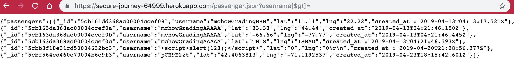
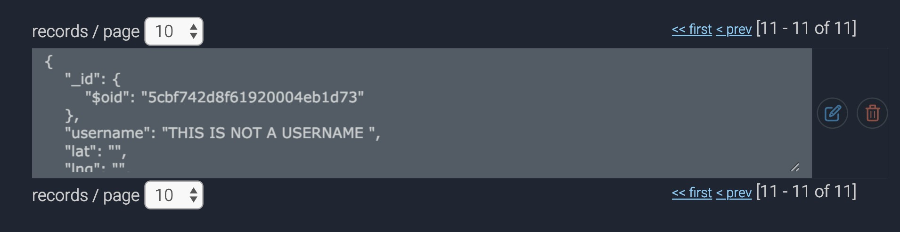
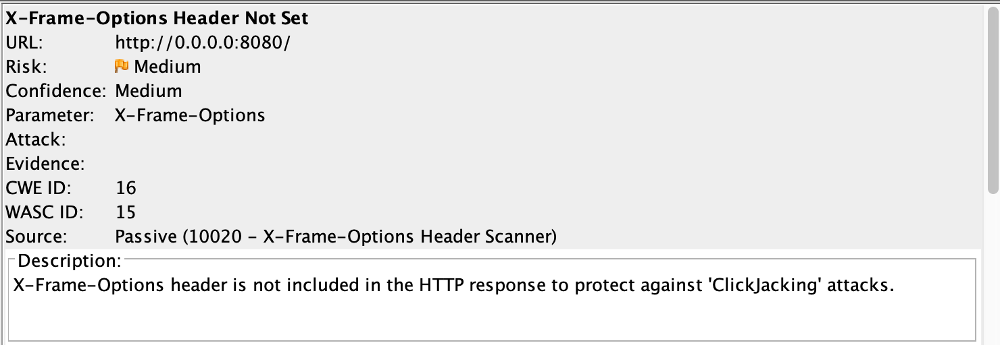

This is a security assessment on a private car service web application. This application allows a user to interact with various cars and/or passengers in their near vicinity to request a ride and/or pick up a passenger. The scope of this assessment will cover both the client-side and server-side of this web app, with the objective of identifying potential security and privacy vulnerabilities. The results of my consultation are as follows.
I began my testing from a black-box perspective, before analyzing any of the source code. I used both Burp Suite and OWASP Zap for this purpose. My findings were inconclusive: I began by looking for XXS vulnerabilities, and did not find any. However, using ZAP I was able to find a vulnerability for "clickjacking", as described below. I moved to white box testing, which is how I most of the vulnerabilities below. I used Curl for NoSQL injection, and directly inserted probelmatic queries into the URLs.
Your web application is extemely vulnerable to an attack called NoSQL Injection. Specifically, attackers are able to see a full list of users in your database without permission to. This is a privacy issue and should be taken very seriously. Additionally, attackers could inject fake users into your system, that aren't actually meant to use the app. Finally, it is possible for an attacker to perform an attack on your web app that would hide malicious links under legitimate content, leaving users vulnerable to unknowingly clicking on these links.


db.users.find({username : usr}), function (err, docs) {
if (!docs.length) {
// handle unknown user
}}

res.setHeader('X-Frame-Options', 'sameorigin') Overall, we have identified three main issues in your web application that will leave the app vulnerable to attackers. Two involve NoSQL injection, and the third involves clickjacking. However, be advised that this search was not exhaustive: there could very well be more security and privacy issues than the three listed here. It is recommended that you add input validation tools to your code, as currently no input validation takes place. This can be done manually, or by using middleware such as Validator.js, koa-validate (which works on top of Validator.js), and Joi. All of these tools are free.